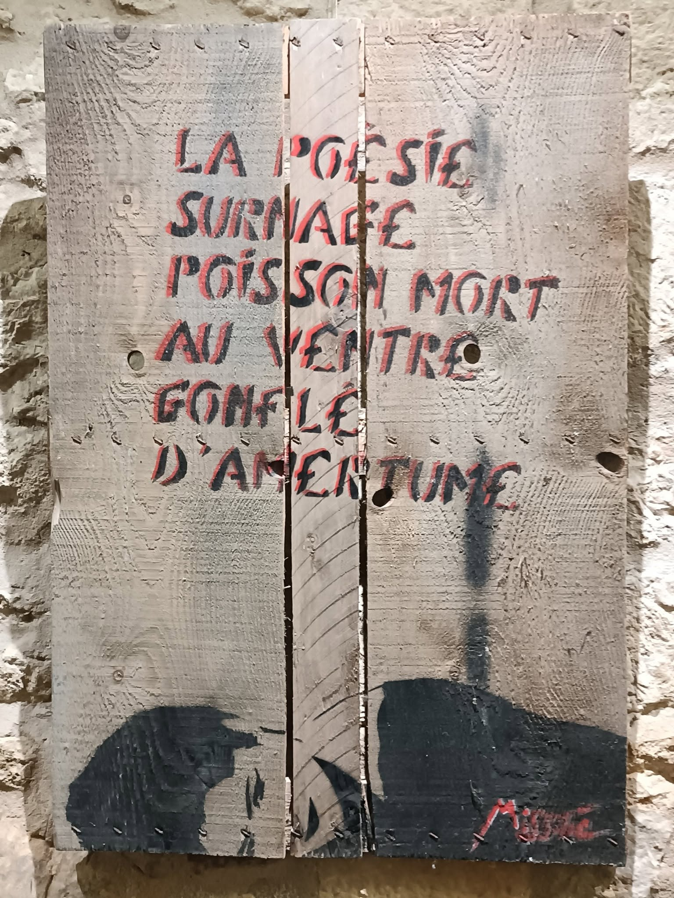

Une phrase résiste
Elle flotte.
Gonflée.
D’images qu’on scroll à midi
entre deux bouchées
de pain industriel.
Gaza crève.
On met un filtre sur la story.
Des gosses coulent en Méditerranée.
Pas d’alerte.
Juste un vague "drame humain"
à la fin du journal.
L’Amazonie crame.
On dit :
"Faut bien du soja."
On sait.
On regarde ailleurs.
On s’habitue.
Mais la poésie —
elle, ne s’habitue pas.
Elle gonfle.
Elle pourrit.
Elle déborde.
Elle pue les vérités planquées.
Elle pue les cris refoulés.
Elle pue tout ce qu’on n’ose pas dire.
Elle surnage.
Poisson mort.
Pas joli. Pas utile.
Juste là.
À la surface.
À la honte.
Elle dérange, elle pue,
elle fait tache sur les plateaux télé.
Elle n’a pas de sponsor.
Pas de QR code.
Pas de campagne promo.
Elle dit :
"Les rois sont nus,"
et ça fait désordre.
Mais parfois…
oui, parfois —
dans une ruelle
taguée de colère,
une phrase résiste.
Pas une citation propre.
Pas une punchline validée.
Non.
Un vers griffé à l’arrache.
Avec du sang, du feu,
ou juste un vieux marqueur sec.
qui dit :
“On est vivants.”
Et ce vers suinte,
il insiste,
il refuse de mourir.
Même à genoux,
même sous les cendres,
Même étouffés,
oubliés,
effacés.
la poésie,
ça brûle encore.
DJAMAL METREF
"La poésie surnage, poisson mort au ventre gonflé d’amertume" (Miss Tic - 1990 - Peinture aérosol sur palissade en bois - 94 X 65 cm)
Djamel Metref
At Yenni le 27 juin 2025

← Tous les poèmes